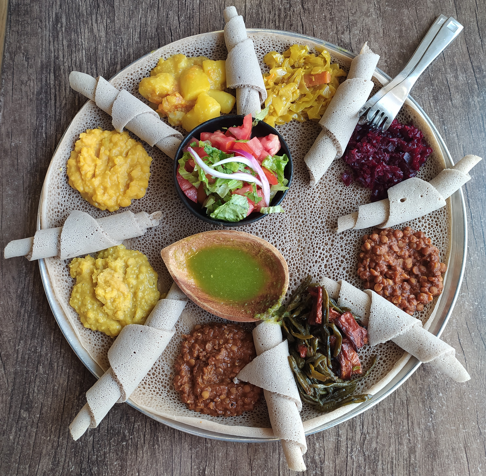

Injera

Description
Injera is a spongy, slightly sour flatbread from Ethiopia and Eritrea,
considered to be the national dish of these two countries.
It is a “plate”on a plate, with various dishes being piled on it and,
using one’s fingers, one breaks off little pieces of the injera to scoop it all up.
Ingredients
- 2 cups teff flour
- 1 cup barley flour
- 1 cup corn flour
- cup self-rising flour
- 1 teaspoon active dry yeast
- 6 cups lukewarm water
Steps
- Ingredients preparation
- Make the Teff Stater
- Blend the Teff Starter
- Self-Rising Flour/ Blend
- Blend /Rise & Refrigerate
- Cool the Injera
- Eat